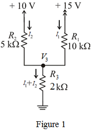
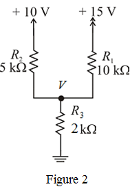

Apply Kirchhoff’s voltage law to the right side loop.
 …… (1)
…… (1)
Refer to Figure P1.16 in the textbook.
(a)
Draw the circuit diagram with branch currents and node voltages.

Apply Kirchhoff’s voltage law to the right side loop.
…… (1)
Apply Kirchhoff’s voltage law to the left side loop.
…… (2)
Substitute for  in equation (1).
in equation (1).
Substitute for  in equation (2).
in equation (2).
Calculate the current through the resistor  .
.
Therefore, the branch currents are,
.
Calculate the common node voltage, using Ohm’s law.
Thus, the voltage at the common node,  is .
is .
(b)
Draw the circuit diagram with node voltage.

Apply Kirchhoff’s current law at node  .
.
Therefore, the node voltage,  at the common node is .
at the common node is .
Calculate the current flowing through resistor,  .
.
Calculate the current flowing through resistor,  .
.
Calculate the current flowing through resistor,  .
.
Therefore, the branch currents are,
 .
.
The second method (Node voltage method) is preferable because it has only one variable (node voltage) to be solved and that node voltage can be used to find all the other currents. It is faster and has the least possibility of errors.